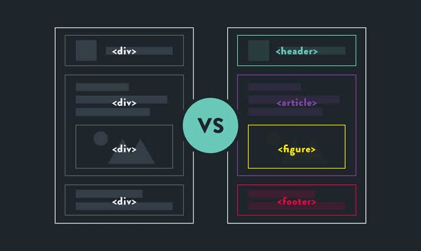

Semantic HTML
When building web pages, we use a combination of non-semantic HTML and Semantic HTML. The word semantic means “relating to meaning,” so semantic elements provide information about the content between the opening and closing tags.
Why use it?
Accessibility
Semantic HTML makes webpages accessible for mobile devices and for people with disabilities as well. This is because screen readers and browsers are able to interpret the code better.
SEO
It improves the website SEO, or Search Engine Optimization, which is the process of increasing the number of people that visit your webpage. With better SEO, search engines are better able to identify the content of your website and weight the most important content appropriately.
Easy to Understand
Semantic HTML also makes the website’s source code easier to read for other web developers.